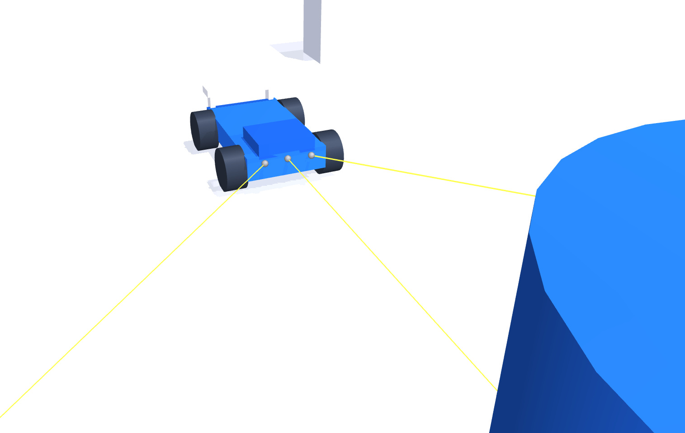
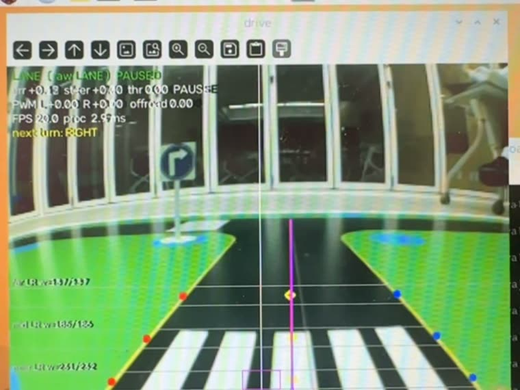
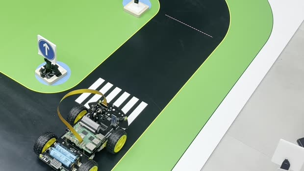

이번 주 스터디 주제는 Sensor & Control입니다.
지난주에는 ROS 2를 이용해서 Node, Topic, Publisher, Subscriber와 같이 로봇 내부에서 데이터를 주고받는 구조를 공부했습니다. 이번 주에는 그다음 단계로, 실제로 센서 데이터를 받았을 때 로봇이 어떤 행동을 해야 하는지에 집중했습니다.
예를 들어 로봇이 앞으로 이동하고 있는데 전방 센서가 장애물을 감지했다고 가정해 보겠습니다. 이때 로봇은 단순히 장애물이 있다는 사실을 아는 것으로 끝나면 안 됩니다. 장애물이 얼마나 가까운지 판단하고, 계속 이동할지, 속도를 줄일지, 어느 방향으로 회전할지 결정해야 합니다. 그리고 바퀴를 움직인 뒤에는 센서값을 다시 읽고, 현재 상황에 맞게 행동을 수정해야 합니다. 이 과정을 Closed-loop Control이라고 합니다.
이번 실습에서는 MuJoCo라는 물리 시뮬레이터에 두 개의 바퀴와 세 개의 거리센서가 달린 로봇을 직접 만들었습니다. 그리고 장애물을 피해서 목표 지점까지 이동하는 Controller를 구현했습니다.
처음에는 과제 명세에 나온 간단한 알고리즘을 구현했습니다. 그런데 실제로 시뮬레이션을 돌려보니 장애물 앞에서 방향을 계속 바꾸거나, 장애물과 충돌하거나, 제자리에서 움직이지 못하는 문제가 발생했습니다. 그래서 왜 그런 문제가 생기는지 실험으로 확인하고, 그 결과를 바탕으로 Controller를 개선하는 것을 이번 주의 핵심 목표로 잡았습니다.
최종적으로는 장애물과 충돌하지 않고 약 12.18초 만에 목표 지점에 도착하는 결과를 얻었습니다.
본론에 들어가기 전에, 이번 실습에서 제어할 로봇이 어떻게 생겼는지 먼저 설명하겠습니다.

시중에 파는 로봇을 가져온 것이 아니라, 시뮬레이터 안에서 몸체와 바퀴, 센서를 직접 정의해서 만든 로봇입니다. 구성은 다음과 같습니다.
| 구성 | 내용 | 값 |
|---|---|---|
| 구동 | 좌우 구동 바퀴 2개 + 균형용 보조 바퀴 | 차동 구동 |
| 바퀴 | 반지름 45 mm, 좌우 바퀴 간격 200 mm | 둘레 283 mm |
| 최고 속도 | PWM 최대 출력일 때 바퀴 선속도 | 630 mm/s |
| 거리센서 | 범퍼에 3개 — 왼쪽 45°, 정면, 오른쪽 45° | 최대 5 m |
| 엔코더 | 바퀴 회전을 펄스로 알려주는 센서 | 기본 360 PPR |
| 목표 감지 | 목표 지점의 신호를 좌우 수광부 2개로 수신 | 방향·거리 추정 |
| 코스 | 사방이 벽으로 막힌 아레나에 원기둥·벽 장애물 | 약 7 × 7 m |
| 제어 주기 | 센서를 읽고 바퀴 명령을 내리는 간격 | 20 ms |
사진에서 몸통 앞쪽으로 뻗는 노란 선 세 개가 거리센서입니다. 가운데가 정면, 양쪽이 각각 45도 방향입니다. 보시면 알 수 있듯이 센서와 센서 사이에는 아무것도 보이지 않는 공간이 생깁니다. 이 점이 뒤에서 Threshold를 정할 때 가장 중요한 근거가 됩니다.
로봇 뒤쪽에 흐리게 찍힌 점들은 지나온 경로를 표시한 것이고, 왼쪽 아래의 파란 원기둥이 피해야 할 장애물입니다.
먼저 Control에 대해 간단히 설명하겠습니다. Control은 현재 상태를 바탕으로 로봇이 어떻게 움직여야 할지 결정하고, 모터에 명령을 전달하는 과정입니다. 로봇 제어 방식은 크게 Open-loop와 Closed-loop로 나눌 수 있습니다.
Open-loop는 한 번 명령을 내리면 그 이후의 상황을 확인하지 않고 그대로 실행하는 방식입니다. 예를 들어 로봇에게 5초 동안 앞으로 이동하라는 명령을 내렸다고 하겠습니다. 그런데 2초 뒤에 장애물이 나타나더라도 로봇은 그것을 고려하지 않고 계속 앞으로 이동합니다.
반면 Closed-loop는 센서값을 계속 확인하면서 행동을 수정합니다. 앞에 장애물이 없으면 직진하고, 장애물이 가까워지면 속도를 줄이고, 더 가까워지면 회전하는 식입니다. 정리하면 다음과 같습니다.
이번 실습에서도 센서를 읽고 제어 명령을 계산하는 과정을 일정한 간격으로 반복하도록 구현했습니다. 여기서는 20 ms, 즉 1초에 50번 제어 판단을 수행하도록 설계했습니다.
앞에서 본 것처럼 이 로봇은 구동 바퀴가 두 개입니다. 자동차와 달리 핸들을 돌리는 조향 장치가 없고, 좌우 바퀴의 속도 차이를 이용해 방향을 바꿉니다. 이를 Differential Drive, 차동 구동 방식이라고 합니다.
왼쪽과 오른쪽 바퀴를 똑같은 속도로 회전시키면 직진합니다. 반대로 오른쪽 바퀴를 왼쪽보다 빠르게 회전시키면 왼쪽으로 회전합니다. 두 바퀴를 반대 방향으로 돌리면 그 자리에서 회전할 수도 있습니다.
이번 로봇에서는 바퀴 속도를 PWM으로 제어했습니다. PWM은 모터에 전달하는 전력의 평균적인 크기를 조절하는 방법입니다. 8비트 PWM을 사용했기 때문에 0부터 255까지의 값으로 출력을 지정할 수 있습니다.
| 상황 | 왼쪽 PWM | 오른쪽 PWM | 로봇의 움직임 |
|---|---|---|---|
| 직진 | +210 | +210 | 앞으로 519 mm/s |
| 감속 | +110 | +110 | 앞으로 272 mm/s |
| 제자리 회전 | −150 | +150 | 전진 0 · 회전 212 °/s |
| 한쪽만 감속 | +55 | +110 | 완만한 호를 그리며 이동 |
| 후진 | −110 | −110 | 뒤로 272 mm/s |
예를 들어 직진할 때는 좌우 바퀴에 모두 210을 주고, 천천히 이동할 때는 110을 줬습니다. 회전할 때는 한쪽 바퀴를 앞으로, 다른 바퀴를 뒤로 회전시켜 제자리 회전을 구현했습니다.
여기서 중요하게 본 것은 PWM 숫자 자체보다는 어떤 상황에서 어떤 바퀴 명령을 내리는가였습니다. 이번 장애물 회피 문제는 모터 출력을 아주 조금씩 미세하게 조정하는 것보다, 직진·감속·회전·후진 중 적절한 행동을 선택하는 것이 중요했습니다. 그래서 상위 행동 결정에는 PID 대신 상태 기계(State Machine)를 사용했습니다.
이번 실습에서는 실제 로봇 대신 MuJoCo 시뮬레이터를 사용했습니다. 단순히 로봇이 움직이는 화면을 만들기 위한 것은 아닙니다.
실제 로봇에서 장애물 회피 알고리즘을 테스트하면 여러 문제가 있습니다. 우선 제어 알고리즘이 잘못되면 로봇이 장애물에 충돌할 수 있습니다. 또한 로봇을 매번 동일한 위치에 놓고, 동일한 장애물 배치에서 같은 실험을 반복하기가 쉽지 않습니다. 특히 센서 노이즈나 잘못된 Threshold처럼 일부러 실패를 유도하는 실험은 실제 하드웨어에서 진행하기 부담스럽습니다.
그래서 시뮬레이션을 이용했습니다. MuJoCo는 로봇의 위치만 화면에 표시하는 것이 아니라, 물리적인 움직임과 접촉을 계산하는 물리 시뮬레이터입니다.
여기서 제가 시뮬레이션을 통해 확인하려고 한 것은 크게 세 가지였습니다.
즉, 시뮬레이션은 최종 결과를 보여주는 용도이면서 동시에 여러 제어 알고리즘을 동일한 조건에서 비교하기 위한 실험 환경이었습니다.
다음으로 센서 데이터를 어떻게 처리했는지 설명하겠습니다. 이번 로봇은 적외선 거리센서를 사용합니다. 그런데 실제 적외선 센서는 장애물까지의 거리를 항상 mm 단위로 직접 알려주는 것은 아닙니다. 일반적으로 센서의 출력은 전압 형태이고, 마이크로컨트롤러는 이 전압을 ADC라는 과정을 거쳐 숫자로 읽습니다. 이번 구현에서는 10비트 ADC를 사용했기 때문에 0부터 1023까지의 정수값을 다룹니다.
여기서 문제가 하나 있습니다. ADC 값과 실제 거리가 일정한 비율로 대응하지 않는다는 것입니다. 예를 들어 ADC 값이 두 배가 된다고 해서 실제 거리가 정확히 절반이 되는 것은 아닙니다. 그래서 ADC 값을 실제 거리 단위로 변환하는 과정이 필요합니다. 이번 펌웨어에서는 다음과 같은 변환식을 사용했습니다.
변환 결과는 정해진 거리 범위로 제한했습니다. 이 식은 정수 나눗셈을 사용하기 때문에 실수 연산 없이 계산할 수 있습니다.
예를 들어 장애물이 약 200 mm 앞에 있을 때는 ADC 값이 678 정도입니다. 반면 장애물이 1000 mm 앞에 있을 때는 ADC 값이 약 190입니다. 여기서 중요한 점은 ADC 값이 1만큼 변했을 때 실제 거리 변화가 얼마나 되는지입니다.
| 실제 거리 | ADC 값 | 1 ADC 카운트 = 거리 변화 |
|---|---|---|
| 150 mm | 808 | 0.3 mm |
| 200 mm | 678 | 0.5 mm |
| 480 mm — 정지 기준 | 357 | 1.7 mm |
| 700 mm — 해제 기준 | 260 | 3.1 mm |
| 1000 mm | 190 | 5.9 mm |
| 2000 mm | 100 | 21.3 mm |
200 mm 부근에서는 1 ADC 카운트가 약 0.5 mm 차이에 해당하지만, 1000 mm 부근에서는 약 5.9 mm 차이에 해당합니다. 즉 가까운 거리에서는 ADC 값 하나의 변화가 작은 거리 차이를 나타내고, 멀리서는 훨씬 큰 거리 차이를 나타냅니다. 이것은 센서가 멀리 있는 물체의 거리를 상대적으로 거칠게 표현한다는 의미입니다.
따라서 장애물을 판단할 때 단순히 센서값 하나만 보는 것이 아니라, 어떤 거리 구간에서 얼마나 신뢰할 수 있는지를 같이 생각해야 했습니다.
여기서 말한 1 ADC 카운트당 거리 변화는 양자화 해상도에 관한 것이고, 센서의 실제 측정 오차 전체를 의미하지는 않습니다.
다음으로 Threshold를 설정했습니다. Threshold는 장애물이 어느 정도 가까워졌을 때 행동을 바꿀지 정하는 기준값입니다. 예를 들어 전방 장애물이 2 m 떨어져 있다면 계속 직진해도 될 것입니다. 그런데 30 cm 앞에 있다면 충돌을 피하기 위해 멈추거나 회전해야 합니다. 문제는 그 기준을 정확히 몇 cm로 설정해야 하느냐입니다.
처음에는 로봇의 제동거리를 기준으로 생각했습니다. 속도가 빠른 로봇일수록 멈추는 데 시간이 오래 걸릴 수 있기 때문입니다. 그래서 실제 시뮬레이션에서 로봇의 제동 성능을 측정했습니다.
측정 결과 제동 시간은 약 0.082초, 제동거리는 4.7 mm였습니다. 예상보다 매우 짧았습니다. 로봇의 질량이 작고 마찰이 크게 설정되어 있었기 때문에 거의 즉시 멈춘 것입니다. 따라서 제동거리만으로 수십 cm 수준의 장애물 회피 Threshold를 정하기는 어려웠습니다.
로봇에는 거리센서가 세 개밖에 없습니다. 왼쪽 45도, 정면, 오른쪽 45도 방향으로만 장애물을 감지합니다. 그러면 센서가 바라보는 방향 사이에는 물체를 직접 확인하지 못하는 공간이 생깁니다.
특히 로봇의 정면 센서에서는 장애물이 보이지 않는데, 실제 차체의 모서리가 장애물과 충돌할 수 있습니다. 센서는 장애물을 피했다고 판단했지만 로봇 몸체가 충분히 빠져나가지 못한 것입니다.
그래서 이번에는 차체의 폭과 센서 방향을 고려해 사각지대에 필요한 안전거리를 계산했습니다.
계산한 사각지대 관련 거리는 약 420 mm였습니다. 여기에 제어 주기 동안의 이동거리, 센서 양자화, 추가 안전 여유를 고려해 정지 기준을 480 mm로 정했습니다. 또 한 번 장애물을 감지한 뒤에는 거리가 700 mm 이상 확보되어야 해제하도록 했습니다. 측면 장애물은 380 mm를 기준으로 사용했습니다.
이렇게 Threshold를 정하는 과정을 통해 느낀 것은, 단순히 적당해 보이는 숫자를 사용하는 것보다 로봇의 물리적 크기와 센서 배치에서 기준을 유도하는 것이 중요하다는 점이었습니다.
이제 실제 시뮬레이션 결과를 설명하겠습니다. 먼저 과제에서 제시한 기본 알고리즘을 구현했습니다. 알고리즘은 매우 간단합니다.
전방 센서가 장애물을 감지하지 않으면 앞으로 이동합니다. 전방이 막혀 있으면 왼쪽과 오른쪽 센서값을 비교합니다. 왼쪽이 더 넓으면 왼쪽으로 회전하고, 오른쪽이 더 넓으면 오른쪽으로 회전합니다.
이 방식은 코드로 작성하면 몇 줄밖에 되지 않습니다. 논리적으로도 굉장히 자연스럽습니다. 그런데 MuJoCo에서 실제로 실행했더니 문제가 발생했습니다.
왼쪽에 있는 로봇이 기본 Controller입니다. 장애물에 접근하면 회전을 시작하는데, 장애물의 모서리 부근에서 방향을 계속 바꾸는 모습을 볼 수 있습니다.
처음에는 왼쪽이 더 넓다고 판단해 왼쪽으로 회전합니다. 그런데 조금 회전하고 나면 센서 방향이 바뀌면서 이번에는 오른쪽이 더 넓게 측정됩니다. 그러면 로봇은 다시 오른쪽으로 회전합니다. 그다음에는 다시 왼쪽이 넓다고 판단합니다. 이 과정이 반복됩니다.
결국 로봇은 장애물을 제대로 피해 나가지 못하고 그 자리에서 방향을 반복적으로 바꾸거나, 장애물을 긁으며 이동하게 됩니다. 화면 테두리가 빨갛게 깜박이는 것이 접촉이 발생한 순간인데, 왼쪽에서만 반복해서 나타납니다.
40초가 끝났을 때 왼쪽은 충돌 61회에 10.04 m를 이동했고, 오른쪽은 충돌 0회에 13.37 m를 이동했습니다. 더 많이 움직였는데 한 번도 부딪히지 않은 것입니다.
여기서 확인한 문제는 기본 Controller가 이전에 어떤 행동을 했는지 기억하지 않는다는 것이었습니다. 매번 새로운 센서값만 보고 판단하기 때문에, 센서값이 조금만 달라져도 직전에 내렸던 결정을 뒤집습니다. 이번에는 이 현상이 어느 정도 심각한지 숫자로 확인해 봤습니다.
과제에서는 Threshold를 지나치게 작게 하거나 크게 하고, 센서에 노이즈를 넣어보는 실험을 요구했습니다. 그래서 기본 Controller를 기준으로 40초 동안 세 가지 실험을 진행했습니다.
| 실험 (40초) | Threshold | 노이즈 | 충돌 | 이동거리 | 판단 전환 |
|---|---|---|---|---|---|
| 기준 — 기본 Controller | 0.7 m | — | 61 | 10.04 m | 146 |
| A · Threshold 축소 | 0.1 m | — | 91 | 6.53 m | 184 |
| A+ · 축소 + 속도 1.5배 | 0.1 m | — | 59 | 7.08 m | 114 |
| B · Threshold 확대 | 3.0 m | — | 0 | 1.25 m | 494 |
| C · 노이즈 ±0.15 m | 0.7 m | 0.15 | 21 | 13.85 m | 98 |
| C+ · 노이즈 ±0.25 m | 0.7 m | 0.25 | 14 | 12.71 m | 66 |
| 개선 Controller | 0.7 m | — | 0 | 13.37 m | 32 |
먼저 Threshold를 0.7 m에서 0.1 m로 줄였습니다. 0.1 m는 장애물과 불과 10 cm 떨어졌을 때 회피 행동을 시작한다는 의미입니다. 이 경우 로봇은 장애물을 너무 늦게 감지하고 회전을 시작합니다.
실험 결과 기본 Controller는 61회 충돌했는데, Threshold를 0.1 m로 낮추자 충돌이 91회로 증가했습니다. 이것은 비교적 예상했던 결과입니다. 장애물에 너무 가까이 접근한 뒤 회피를 시작하기 때문에, 로봇이 회전하는 도중 차체가 장애물에 부딪힌 것입니다.
여기서 속도를 1.5배 높이는 실험도 진행했습니다. 그런데 오히려 충돌 횟수가 59회로 줄어들었습니다. 직관적으로 생각하면 속도가 빨라지면 충돌이 늘어날 것 같지만 실제 결과는 그렇지 않았습니다. 이것은 속도가 빨라져서 더 안전해졌다고 해석하면 안 됩니다. 로봇의 이동 경로와 장애물 앞에서의 행동 자체가 달라졌기 때문에, 충돌 횟수만으로 단순히 속도가 좋은 방향으로 작용했다고 결론 내릴 수 없습니다.
이번에는 Threshold를 3.0 m로 높였습니다. 장애물이 3 m 안에 들어오기만 해도 회피를 시작하는 것입니다. 실행 전에는 충돌이 거의 발생하지 않을 것이라고 예상했습니다. 실제로 충돌은 0회였습니다.
그런데 다른 문제가 발생했습니다. 40초 동안 이동한 거리가 고작 1.25 m였고, 판단 전환은 494회 발생했습니다. 충돌하지 않았지만 사실상 앞으로 제대로 이동하지 못한 것입니다.
이 실험은 굉장히 중요했습니다. 우리가 로봇의 안전성을 충돌 횟수만으로 평가한다면 이 Controller는 완벽한 것처럼 보입니다. 하지만 실제로는 목표 지점에 가까워지지 못하고 제자리에서 계속 방향을 바꾸고 있었습니다.
따라서 장애물 회피 Controller는 충돌 횟수뿐 아니라 이동거리, 도착 여부, 소요 시간, 불필요한 행동 전환 등을 함께 평가해야 한다고 생각했습니다.
세 번째 실험은 Sensor Noise입니다. 현실에서는 센서가 항상 정확한 값을 알려주지 않습니다. 예를 들어 장애물까지의 실제 거리가 0.8 m라도 측정값은 0.75 m, 0.82 m, 0.79 m처럼 조금씩 달라질 수 있습니다. 이렇게 흔들리는 값을 그대로 사용하면 로봇이 같은 장애물을 보고도 계속 다른 판단을 내릴 수 있습니다.
그래서 센서값에 ±0.15 m와 ±0.25 m의 노이즈를 추가했습니다. 그런데 예상과 다르게 충돌 횟수가 61회에서 각각 21회, 14회로 줄어들었습니다.
이 결과만 보면 노이즈를 추가하는 게 더 좋아 보일 수 있습니다. 하지만 실제로는 노이즈 때문에 장애물이 더 멀리 있다고 읽히기도 하고 더 가까이 있다고 읽히기도 하면서, 로봇이 일찍 멈추거나 다른 경로로 이동하는 현상이 나타났습니다. 즉 충돌 횟수가 감소한 원인이 Controller가 더 정확해졌기 때문이라고 볼 수는 없습니다.
이 세 실험을 통해 얻은 결론은 단순했습니다. Threshold 숫자만 바꿔서는 기본 Controller의 구조적인 문제를 해결하기 어렵다는 것입니다.
기본 Controller의 문제를 해결하기 위해 세 가지 방법을 추가했습니다.
히스테리시스는 상태가 바뀌는 기준을 들어갈 때와 나올 때 다르게 만드는 방법입니다.
예를 들어 장애물까지의 거리가 480 mm 이하가 되면 장애물이 있다고 판단합니다. 그런데 로봇이 조금 움직여서 거리가 490 mm가 되었다고 바로 장애물이 사라졌다고 판단하지는 않습니다. 한 번 장애물이 있다고 판단했다면 700 mm 이상 거리가 확보되어야 다시 안전한 상태로 돌아갑니다.
즉 장애물 진입 기준과 해제 기준을 다르게 설정한 것입니다. 이렇게 하면 480 mm 근처에서 센서값이 조금 흔들려도 상태가 계속 바뀌지 않습니다. 여기서 두 기준 사이의 220 mm를 히스테리시스 폭이라고 부릅니다.
두 번째는 한 번 회전을 시작하면 일정 시간 동안 그 방향을 유지하도록 하는 것입니다. 기본 Controller에서는 왼쪽이 넓어 보이면 왼쪽으로 회전했다가, 다음 순간 오른쪽이 넓어 보이면 바로 오른쪽으로 회전했습니다. 그래서 회전 방향이 계속 뒤집혔습니다.
이를 해결하기 위해 한 번 회전 방향을 결정하면 360 ms 동안 유지하도록 만들었습니다. 20 ms마다 제어하기 때문에 약 18번의 제어 주기 동안 같은 방향을 유지하는 셈입니다. 이렇게 하면 장애물 모서리에서 센서값이 조금 바뀌더라도 회전을 끝내고 장애물에서 빠져나갈 가능성이 높아집니다.
마지막으로 측면 장애물을 좀 더 적극적으로 고려했습니다. 기본 알고리즘에서도 좌우 센서를 회전 방향을 선택하는 데 사용했습니다. 하지만 개선한 Controller에서는 직진 중에도 측면 공간을 확인하도록 했습니다.
예를 들어 왼쪽 장애물에 너무 가까워지면 좌우 바퀴 속도를 다르게 해서 로봇이 장애물에서 멀어지도록 조정합니다. 또 양쪽이 모두 좁아서 빠져나가기 어려운 상황에서는 억지로 앞으로 진행하지 않고 후진한 뒤 회전하는 복구 동작을 수행하도록 했습니다.
이를 위해 CRUISE, SLOW, AVOID, BACKUP, SPIN, ARRIVED 같은 상태를 정의했습니다.
중요한 점은 단순히 조건문을 더 많이 추가한 것이 아닙니다. 로봇이 이전 상태와 현재 수행 중인 행동을 기억하도록 바꿨다는 것이 핵심입니다.
개선한 제어 알고리즘은 최종적으로 C 언어로 작성했습니다. 처음 과제에서는 Python의 controller.py를 수정하는 방식이 제시됐지만, 이번에는 실제 임베디드 환경까지 고려해 펌웨어 형태로 구현해 보았습니다. 파일 이름은 firmware.c입니다.
여기서 펌웨어는 센서 입력을 받고 실제 모터에 전달할 제어 명령을 계산하는 프로그램입니다. 이번 구현에서는 실수 연산과 동적 메모리 할당을 사용하지 않았습니다. 왜냐하면 실제 마이크로컨트롤러에서는 PC처럼 연산 성능이나 메모리가 충분하지 않을 수 있기 때문입니다. 따라서 C99와 정수 연산을 이용해 제어 로직을 작성했습니다.
펌웨어는 다음과 같은 순서로 동작합니다.
여기서 중요한 것은 Python이 제어 판단을 대신하지 않는다는 것입니다. Python은 MuJoCo에서 센서값을 받아 C 함수에 전달하고, C 함수가 내보낸 PWM 명령을 시뮬레이터의 모터에 적용하는 역할을 합니다. 실제 직진, 회전, 후진, 정지 여부는 C 펌웨어가 결정합니다.
실제 하드웨어로 옮길 때 Python으로 만든 제어 알고리즘을 다시 C로 구현해야 한다면, 그 과정에서 원래와 다른 동작이 발생할 수도 있습니다.
이번에는 같은 C 소스를 호스트에서 사용할 공유 라이브러리와 브라우저용 WebAssembly로 빌드했습니다. 두 빌드 모두 외부 라이브러리 심볼 없이 링크되는 것을 확인했기 때문에, ARM 보드용으로 컴파일하는 것도 같은 소스로 가능할 것으로 보고 있습니다.
| 용도 | 빌드 결과 | 크기 | 확인 여부 |
|---|---|---|---|
| 호스트 — MuJoCo에서 호출 | 공유 라이브러리 | 17,864 B | 동작 확인 |
| 브라우저 | WebAssembly | 4,341 B | 빌드 확인 |
| ARM 보드 | ELF | — | 아직 진행하지 않음 |
따라서 시뮬레이션용 알고리즘과 임베디드용 알고리즘을 별도로 관리하지 않는 구조를 실험해 본 것입니다. 다만 실제 보드에 올려서 센서와 모터가 정상 동작하는지까지 검증한 것은 아니므로, 하드웨어 검증은 별도의 단계가 필요합니다.
이제 개선된 Controller의 주행 영상입니다.
처음에는 로봇이 목표 지점을 향해 앞으로 이동합니다. 전방에 장애물이 가까워지면 감속하거나 회전을 시작합니다. 그리고 한 번 선택한 회전 방향을 유지하면서 장애물의 모서리를 지나갑니다. 장애물에서 벗어나면 다시 전진 상태로 돌아옵니다. 이런 과정을 반복해서 최종 목표 지점에 도착합니다.
이 실행에서는 약 12.18초 만에 도착했고, 충돌은 0회, 스톨도 0회였습니다. 상태 전환 횟수는 9회였습니다.
물론 충돌 없이 도착했다는 결과 하나만으로 Controller가 모든 상황에서 안전하다고 말할 수는 없습니다. 하지만 적어도 이번 코스에서는 기본 Controller가 보여줬던 잦은 방향 변경이나 장애물 충돌 문제를 해결했다는 것을 확인할 수 있었습니다.
다음 영상은 기본 알고리즘과 개선 알고리즘을 동일한 시뮬레이션 환경에서 실행해 비교한 것입니다. 왼쪽은 기본 Controller이고, 오른쪽은 개선된 펌웨어 Controller입니다. 두 방식 모두 같은 물리엔진과 센서 모델을 사용합니다. 다른 점은 호출하는 제어 함수입니다.
각 화면 위쪽에는 그 순간의 ADC 센서값과 좌우 PWM, 현재 상태가 함께 표시됩니다. 양쪽 센서값이 거의 같다는 점을 먼저 확인할 수 있습니다. 같은 것을 보고 있는데 결과가 달라지는 것입니다.
왼쪽을 보면 장애물 앞에서 로봇이 방향을 여러 번 바꿉니다. 센서값이 변할 때마다 회전 방향을 다시 결정하기 때문입니다. 반면 오른쪽은 장애물을 감지하면 한쪽 방향으로 충분히 회전하고, 공간이 확보되면 다시 앞으로 이동합니다.
| Controller | 충돌 | 이동거리 | 도착 |
|---|---|---|---|
| 기본 Controller | 18회 | 6.56 m | 도달 실패 |
| 개선 Controller | 0회 | 5.27 m | 12.1초 |
실험 결과 기본 Controller는 충돌이 18회 발생했고, 총 6.56 m를 이동했지만 목표 지점에는 도달하지 못했습니다. 반면 개선된 Controller는 약 5.27 m를 이동해 12.1초 정도에 도착했고, 충돌은 0회였습니다.
여기서 기본 Controller가 이동거리가 더 길다는 점도 중요합니다. 많이 움직였다고 해서 목표를 향해 효율적으로 이동한 것은 아닙니다. 오히려 장애물 앞에서 여러 번 왔다 갔다 하면서 이동거리만 증가했습니다. 따라서 이번 결과에서는 개선된 Controller가 충돌을 줄이는 것뿐만 아니라 불필요한 움직임을 줄여 실제 목표까지 도달했다는 점을 강조할 수 있습니다.
이번에는 센서 노이즈에 따라 회전 방향이 얼마나 자주 바뀌는지도 비교했습니다.
| 센서 노이즈 | 기본 — 판단 뒤집힘 | 개선 — 판단 뒤집힘 | 초당 |
|---|---|---|---|
| 없음 | 0 | 0 | — |
| ±0.05 m | 77 | 1 | 7.7 → 0.1 |
| ±0.10 m | 95 | 1 | 9.5 → 0.1 |
| ±0.15 m | 101 | 1 | 10.1 → 0.1 |
10초 동안 센서 노이즈가 ±0.15 m인 경우, 기본 Controller는 판단 방향이 101번 뒤집혔습니다. 1초에 약 10번씩 판단이 바뀐 것입니다. 반면 개선된 Controller는 같은 조건에서 1번만 바뀌었습니다.
이것은 단순히 코드가 더 복잡해졌기 때문이 아닙니다. 히스테리시스와 회전 커밋을 사용해 센서값이 조금 바뀌더라도 기존 판단을 쉽게 뒤집지 않도록 했기 때문입니다.
이번 실험에서 가장 인상적이었던 결과 중 하나였습니다. 센서를 자주 읽는 것이 항상 좋은 제어로 이어지는 것은 아닙니다. 실제 모터가 따라갈 수 없을 정도로 명령을 빠르게 바꾼다면 오히려 로봇이 제자리에서 떨거나 불안정하게 움직일 수 있습니다.
개선된 Controller를 만든 뒤에는 어떤 조건에서 다시 실패하는지도 확인했습니다. 첫 번째는 센서 노이즈를 매우 크게 증가시키는 실험입니다.
앞에서는 히스테리시스를 적용해 센서값의 흔들림을 줄였습니다. 그런데 노이즈가 아주 커지면 어떻게 될까요? 히스테리시스는 480 mm에서 장애물이 있다고 판단하고 700 mm에서 해제합니다. 두 기준의 차이는 220 mm입니다.
| ADC 노이즈 | 480 mm가 읽히는 범위 | 거리 환산 폭 | 히스테리시스 220 mm 대비 |
|---|---|---|---|
| ±60 LSB | 395 – 599 mm | 204 mm | 구간 안 |
| ±120 LSB | 331 – 779 mm | 448 mm | 약 2배 |
| ±200 LSB | 268 – 1233 mm | 965 mm | 약 4.4배 |
그런데 ADC에 ±200 LSB의 큰 노이즈를 넣으면, 480 mm 부근의 거리가 약 268 mm에서 1233 mm 사이로 읽힐 수 있습니다. 거리로 환산한 전체 흔들림 폭이 약 965 mm가 되는 것입니다. 이는 히스테리시스 폭인 220 mm보다 훨씬 큽니다. 따라서 히스테리시스만으로는 센서값의 큰 변화를 막기 어렵습니다.
실제로 실행 결과 로봇은 목표 지점에 도착하기는 했지만 충돌이 3회, 스톨이 1회 발생했고, 도착 시간도 약 17.2초로 증가했습니다. 깨끗한 센서 조건에서는 12.18초에 충돌 없이 도착했으므로 성능이 떨어진 것입니다.
이 실험을 통해 히스테리시스의 폭을 적당히 정하는 것만으로는 부족하다는 것을 알 수 있었습니다. 먼저 실제 센서의 노이즈가 어느 정도인지 측정하고, 그것을 거리 단위로 환산한 뒤 제어 기준을 설정해야 합니다.
또 필터를 강하게 적용하면 노이즈를 줄일 수는 있지만 센서 변화에 대한 반응이 느려지는 단점도 있습니다. 즉 센서를 안정적으로 읽는 것과 빠르게 반응하는 것 사이에는 교환 관계가 있다는 점을 확인했습니다.
두 번째 추가 실패 실험은 엔코더 분해능을 낮추는 것이었습니다.
엔코더는 바퀴가 얼마나 회전했는지를 펄스라는 신호로 알려주는 센서입니다. 이 펄스 수를 통해 로봇이 실제로 움직이고 있는지 확인할 수 있습니다. 펌웨어에는 모터에 움직이라는 명령을 내렸는데도 바퀴의 펄스가 충분히 변하지 않으면 스톨이라고 판단하는 기능이 있습니다. 스톨은 바퀴가 장애물에 걸리거나 모터가 제대로 회전하지 못하는 상태입니다.
이번 코드에서는 한 제어 주기 동안 엔코더 펄스가 3개 이하이면 움직임이 부족한 것으로 판단하는 기준을 사용했습니다.
| 엔코더 PPR | 20 ms 동안 평균 펄스 | 펌웨어가 보는 것 | 결과 |
|---|---|---|---|
| 20 PPR | 0.61개 | 항상 "안 굴러감"으로 판단 | 도달 실패 · 스톨 17회 |
| 60 PPR | 1.84개 | 여전히 오판 | — |
| 180 PPR | 5.52개 | 기준 초과 · 정상 | — |
| 360 PPR | 11.04개 | 기준 초과 · 정상 | 12.18초 도착 · 스톨 0회 |
기본 설정인 360 PPR에서는 20 ms 동안 평균 약 11개의 펄스를 얻을 수 있어 문제가 발생하지 않았습니다.
그런데 엔코더를 20 PPR로 바꾸면 어떻게 될까요? 같은 속도로 바퀴가 회전하더라도 20 ms 동안 평균적으로 발생하는 펄스는 0.61개밖에 되지 않습니다. 즉 로봇이 정상적으로 움직여도 코드에서 요구하는 3펄스에 도달하기 어려운 것입니다.
영상에서는 로봇이 앞으로 잘 이동하다가 갑자기 후진하고, 회전하고, 다시 복구 동작을 반복하는 모습을 볼 수 있습니다. 그런데 실제로 바퀴가 고장 난 것은 아닙니다. 엔코더 분해능이 낮아졌는데도 기존 스톨 기준을 그대로 사용했기 때문에 정상 움직임을 고장으로 잘못 판단한 것입니다.
실험에서는 26초 동안 스톨이 17회 발생했고, 상태 전환도 57회 발생했습니다. 목표 지점에 도착하지 못했고, 마지막에는 목표로부터 5.67 m 떨어져 있었습니다. 하지만 충돌은 0회였습니다. 이 실험에서도 충돌 횟수 하나만 보면 문제를 발견하기 어렵습니다.
여기서 중요한 점은 센서의 성능과 제어 주기에 맞춰 고장 감지 기준을 설정해야 한다는 것입니다. 엔코더의 PPR이 낮다면 여러 제어 주기의 펄스를 누적해서 확인하거나, 감지 시간 간격을 늘리는 방식이 필요합니다. 결국 로봇의 실제 고장뿐 아니라 고장을 판단하는 로직 자체의 오류도 검증해야 한다는 것을 배웠습니다.
지금까지의 실패는 전부 판단 기준을 잘못 잡아서 생긴 것이었습니다. 마지막 실험은 성격이 다릅니다. 판단 기준이 아무리 정확해도, 센서가 애초에 틀린 값을 보내면 아무 소용이 없다는 것을 보여주는 실험입니다.
적외선 거리센서는 빛을 쏘고 되돌아온 빛을 받아서 거리를 잽니다. 그래서 표면이 빛을 어떻게 돌려보내느냐에 따라 결과가 달라집니다. 보통 벽은 빛을 사방으로 흩어 보내기 때문에 어느 방향에서 봐도 일부가 센서로 돌아옵니다. 그런데 거울은 들어온 각도 그대로 한 방향으로만 튕겨 냅니다. 비스듬히 보면 그 빛은 센서를 완전히 빗나가서 영영 돌아오지 않습니다.
그래서 같은 자리에 같은 크기의 판을 세워 두고, 하나는 보통 벽으로, 하나는 거울로 두고 비교했습니다. 크기도 위치도 펌웨어도 전부 같고, 바뀐 것은 표면이 빛을 돌려보내는 방식 하나뿐입니다.
먼저 로봇을 거울 앞 0.60 m 지점에 세워 두고, 제자리에서 방향만 돌려 가며 전방 센서가 뭐라고 읽는지 확인했습니다.
| 로봇이 틀어진 각도 | 실제 거리 | 보통 벽이 읽는 값 | 거울이 읽는 값 | 거울에서 벌어지는 일 |
|---|---|---|---|---|
| 0° (정면) | 600 mm | 601 mm | 1207 mm | 두 배 거리의 허상 |
| ±5° | 603 mm | 604 mm | 1224 mm | 두 배 거리의 허상 |
| ±10° | 612 mm | 611 mm | 4000 mm | 되돌아오는 빛 없음 |
| ±15° | 627 mm | 626 mm | 4000 mm | 되돌아오는 빛 없음 |
| ±20° | 648 mm | 650 mm | 4000 mm | 되돌아오는 빛 없음 |
| ±30° | 716 mm | 716 mm | 4000 mm | 되돌아오는 빛 없음 |
여기서 봐야 하는 것은 가운데 두 칸입니다. 보통 벽은 어느 각도에서 보든 실제 거리와 거의 같은 값을 돌려줍니다. 600 mm 앞에 있으면 601 mm라고 읽습니다. 그런데 같은 자리의 거울은, 정면으로 봤을 때 1207 mm라고 읽습니다. 정확히 두 배입니다. 거울에 비친 자기 모습을 거울 뒤쪽에 있는 물체로 착각해서, 실제보다 두 배 먼 곳에 뭔가 있다고 보고하는 것입니다.
조금만 틀어지면 더 심해집니다. 20° 틀어진 순간부터는 4000 mm, 즉 센서의 측정 한계값이 나옵니다. 이 값은 "저 앞은 끝까지 비어 있다"는 뜻입니다. 눈앞 648 mm에 단단한 판이 있는데 센서는 아무것도 없다고 말하고 있는 것입니다.
중요한 것은 어떤 각도에서도 맞는 값이 나오지 않는다는 점입니다. 정면이면 두 배로 멀게, 비스듬하면 아예 없는 것으로 읽습니다. 센서를 더 좋은 것으로 바꾸거나 노이즈를 걸러 내는 걸로는 해결되지 않습니다.
이제 이 상태로 실제 주행을 시켜 봤습니다.
왼쪽부터 보겠습니다. 2초쯤에 전방 센서가 1739 mm를 읽고, 가까워지면서 값이 계속 줄어듭니다. 4.5초에 700 mm 아래로 내려가 감속하고, 5초에 480 mm 아래로 내려가 회전을 시작합니다. 판을 비켜서 옆으로 빠져나갑니다. 20초 동안 판에 부딪힌 횟수는 0회입니다.
오른쪽은 같은 순간에 전방 센서가 4000 mm를 읽고 있습니다. 판이 거기 그대로 있는데도 말입니다. 화면의 노란 선은 분명히 판에 닿아 있는데 숫자는 4000입니다. 빛은 판에 닿았지만 센서로 돌아오지 않은 것입니다.
그래서 로봇은 끝까지 감속하지 않습니다. 상태 표시가 계속 CRUISE, 즉 전속력 주행입니다. 5.4초에 그대로 거울에 박습니다.
더 문제는 그다음입니다. 박은 뒤에도 세 개의 센서가 전부 4000 mm를 보고합니다. 펌웨어가 보기에는 사방이 뻥 뚫린 상태이므로 계속 전진 명령을 내보냅니다. 20초가 끝날 때까지 같은 자리에서 14.6초 동안 벽을 밀고 있었습니다.
그러면 "바퀴가 안 굴러가는 것"으로 알아챌 수는 없었을까요? 앞 절에서 만든 스톨 감지가 바로 그 기능입니다. 그런데 이번에는 작동하지 않았습니다.
| 20초 주행 | 보통 벽 | 거울 |
|---|---|---|
| 판에 충돌 | 0회 | 1회 (5.4초) |
| 실제로 이동한 거리 | 6.30 m | 3.45 m |
| 엔코더가 센 바퀴 회전량 | 16,060 | 24,132 |
| 스톨 감지 | 0회 | 0회 |
이 표에서 봐야 할 것은 가운데 두 줄입니다. 거울 쪽은 실제로 절반밖에 못 갔는데, 바퀴 회전량은 오히려 1.5배 많습니다. 벽에 막힌 채로 바퀴만 헛돌았기 때문입니다. 엔코더 입장에서는 바퀴가 아주 잘 돌고 있으므로 스톨이 아니고, 거리센서 입장에서는 앞이 비어 있으므로 장애물도 아닙니다. 두 센서가 각각은 멀쩡하게 동작하면서, 둘 다 "문제없음"이라고 말하는 상태가 만들어진 것입니다.
여기서 알 수 있는 것은 두 가지입니다. 첫째, 센서는 물체가 아니라 물체에서 돌아온 신호를 재는 장치이고, 신호가 돌아오지 않는 표면은 그 센서에게 존재하지 않는 것과 같습니다. 유리문, 거울, 광택 있는 금속, 검은 천은 전부 여기에 해당합니다. 둘째, 그래서 한 종류의 센서만으로는 이 상황을 벗어날 수 없습니다. 범퍼 스위치나 전류 센서처럼 접촉을 직접 느끼는 장치, 또는 서로 원리가 다른 센서를 함께 두고 값이 서로 어긋나는지 확인하는 방법이 필요합니다. 이번 주에 만든 개선 Controller가 끝이 아니라는 것을, 이 실험이 가장 분명하게 보여 줬습니다.
여기서 자연스럽게 드는 질문이 있습니다. 비싼 LiDAR를 쓰는 로봇은 이 문제가 없을까요? 결론부터 말씀드리면 LiDAR도 똑같이 당합니다. 해결된 문제가 아니라, 지금도 로봇청소기가 유리문 앞에서 길을 잃거나 거울 쪽으로 들어가는 사례가 계속 보고됩니다. 빛을 쏘고 돌아온 빛을 받는다는 원리가 같기 때문에 원리적으로 같은 한계를 가집니다.
다만 조금 유리한 점은 있습니다. 이번 로봇은 센서가 세 개뿐이라 전방이 죽으면 그 방향 정보가 통째로 사라졌습니다. LiDAR는 회전하면서 한 바퀴에 수백 개가 넘는 점을 뿌리기 때문에, 거울 면에서 오는 점들이 망가져도 거울의 테두리나 프레임, 바닥 몰딩에서 오는 점들은 정상적으로 돌아옵니다. 완전히 눈이 머는 것이 아니라 그 구역만 구멍이 뚫리는 형태라서, 뭔가 이상하다는 것을 알아챌 여지가 남습니다.
그리고 실제 시스템에는 이번 실험과 결정적으로 다른 점이 하나 있습니다. 반사가 돌아오지 않은 것을 비어 있는 것으로 쓰지 않는다는 점입니다.
| 센서가 돌려준 것 | 이번 실습의 펌웨어 | 실제 시스템 |
|---|---|---|
| 600 mm | 장애물 있음 | 장애물 있음 |
| 되돌아온 빛이 없음 | 4000 mm · 비어 있음 | 모름 |
이 표의 아래 줄이 이번 실패의 전부입니다. 이번 펌웨어는 반사가 없으면 최대 측정 거리인 4000 mm를 내보냈고, 그 값을 "앞이 끝까지 비어 있다"는 뜻으로 그대로 사용했습니다. 실제 로봇의 지도가 비어 있음과 막혀 있음, 두 가지가 아니라 비어 있음 · 막혀 있음 · 모름 세 가지 상태를 쓰는 이유가 바로 이것입니다. 모르는 구역으로는 전속력으로 들어가지 않고, 속도를 줄여 접근하거나 다른 센서에 확인합니다. 모르는 것을 안전한 것으로 가정하지 않는다는 원칙입니다.
그다음으로는 원리가 다른 센서를 겹쳐 둡니다. 여기서 재미있는 것은 초음파입니다. 음파는 유리를 통과하지 못하고 그대로 튕겨 나오기 때문에 LiDAR가 못 보는 유리를 초음파는 잘 봅니다. 서로의 약점이 정확히 반대라서 같이 답니다. 접촉을 직접 느끼는 범퍼 스위치도 거의 모든 로봇청소기에 들어 있습니다. 못 보면 부딪혀서 아는 쪽을 최후의 보루로 남겨 두는 것입니다.
앞 절에서 작동하지 않았던 스톨 감지도 실제 로봇에서는 보완됩니다. 엔코더만 보면 바퀴가 잘 돌고 있으니 정상으로 보이지만, 벽에 막힌 상태에서는 모터 전류가 치솟고 IMU는 가속도를 느끼지 못합니다. 바퀴는 도는데 몸이 나가지 않는다는 것을 이 둘을 함께 보고 판단합니다.
마지막으로, 현실에서 가장 많이 쓰이는 방법은 조금 허무합니다. 사람이 미리 알려주는 것입니다. 로봇청소기 앱에서 거울이나 유리문 앞에 가상 벽을 긋고, 산업용 운반 로봇은 바닥에 자기 테이프나 반사 마커를 깔고, 공항이나 쇼핑몰의 안내로봇은 유리벽에 띠를 둘러 달라고 요청합니다. 센서로 전부 해결하려 하지 않고 환경 쪽을 로봇에 맞게 고치는 것인데, 공학적으로 멋있어 보이지는 않아도 가장 싸고 확실한 방법입니다.
정리하면 실제 로봇도 거울을 보지는 못합니다. 대신 보지 못했다는 사실 자체를 알아채고, 그 상태에서 보수적으로 움직이도록 만들어 둡니다. 이번 로봇이 거울에 박은 것은 센서가 싸구려여서가 아니라 반사가 없는 것을 비어 있는 것으로 단정했기 때문이고, 이 부분은 센서를 LiDAR로 바꿔도 그대로 재현됩니다.
· 거울의 광학은 다음 가정으로 계산했습니다. 거울은 입사각과 반사각이 같은 정반사만 하고, 되돌아온 빛을 수신부가 잡으려면 광선이 거울 법선에서 10° 안에 들어와야 한다고 두었습니다. 실제 삼각측량 방식 적외선 센서는 발광부와 수광부 간격이 수 mm라서 이 각도가 훨씬 더 좁습니다. 즉 실제 로봇에서는 이 실험보다 더 쉽게 실패합니다.
마지막으로 이번 실습과 연결되는 실제 로봇 프로젝트도 살펴봤습니다. 다른 과정에서 진행한 Sign-Aware Lane Driving 프로젝트입니다. 라즈베리파이 5를 이용한 소형 자율주행 차량으로, 카메라를 통해 차선을 인식하고 표지판에 따라 주행하는 시스템입니다.


이번 MuJoCo 로봇과 마찬가지로 좌우 두 바퀴의 속도를 다르게 하여 방향을 제어합니다. 차이점은 이번에는 적외선 거리센서 대신 카메라를 사용하고, 차선을 따라가는 데 PID 제어를 사용했다는 점입니다. 하지만 실제로 겪은 문제는 이번 주 실습과 상당히 비슷했습니다.
카메라에서 차선을 인식할 때도 화면마다 인식 결과가 조금씩 달라질 수 있습니다. 이 값을 그대로 반영하면 차량이 좌우로 자주 흔들릴 수 있습니다. 그래서 같은 차선 상태가 3프레임 연속으로 확인되었을 때만 상태를 변경하도록 했습니다.
이것은 이번 실습에서 사용한 히스테리시스나 회전 커밋과 목적이 비슷합니다. 한 번의 센서 출력만 보고 바로 결정을 바꾸지 않고, 여러 순간에 걸친 정보를 이용해 판단을 안정적으로 만드는 것입니다.
실제 주행에서는 교차로에 진입할 때 차선 경계가 일시적으로 사라지는 문제가 있었습니다. 처음에는 차선 경계가 보이지 않으면 도로를 잃었다고 판단해 차량이 멈추도록 했습니다. 그런데 교차로에서는 정상적으로 주행하더라도 차선 경계가 사라질 수 있습니다.
따라서 교차로에 진입한 상황을 따로 판단하고, 그 구간에서는 일정 시간 동안 이전 상태를 유지하며 통과하도록 수정했습니다. 이것은 이번 엔코더 실험과 같은 유형의 문제라고 볼 수 있습니다. 정상적인 상황을 고장이라고 오해한 것입니다.
실차 프로젝트에서는 표지판 인식 모델의 mAP50이 0.971로 높게 나왔습니다. 하지만 INT8로 경량화한 뒤 실제 주행 코드의 신뢰도 기준에서 확인해 보니, 정지선을 인식하는 비율은 53%에 불과했습니다.
| 항목 | 값 |
|---|---|
| 표지판 인식 mAP50 | 0.971 |
| INT8 경량화 후 정지선 인식률 | 53% |
| 나머지 8종 인식률 | 97 – 100% |
| 모델 크기 | 6.5 → 3.25 MB |
| 추론 시간 | 23.7 → 16.1 ms |
전체 평균 성능만 보면 좋은 모델이지만 실제 주행에서 중요한 정지선을 놓칠 수 있다는 것입니다. 이것은 이번 시뮬레이션에서 충돌이 0회인데도 목표까지 거의 이동하지 못했던 Threshold 3.0 m 실험과 비슷한 교훈을 줍니다. 하나의 성능 지표가 좋아도 실제 시스템이 잘 작동한다는 보장은 없다는 점입니다.
이번 실습을 지난주 ROS 2 학습 내용과 연결해 보면 다음과 같습니다. 지난주에는 Publisher와 Subscriber를 통해 서로 다른 Node가 데이터를 주고받는 방법을 배웠습니다.
이번 주에 구현한 로봇을 ROS 2 구조로 나눈다면, 센서 데이터를 제공하는 Sensor Node와 이를 이용해 행동을 판단하는 Controller Node, 그리고 모터를 제어하는 Motor Node로 구성할 수 있습니다. 센서 데이터는 /distance 같은 Topic으로 전달하고, Controller에서 계산한 제어 명령은 /cmd_vel 같은 Topic으로 전달할 수 있습니다.
즉 지난주는 로봇 내부에서 데이터를 어떻게 전달하는지를 배웠고, 이번 주는 그 데이터를 받아 실제 행동을 어떻게 결정하는지를 배운 것입니다.
또한 이번에는 제어 판단을 C 펌웨어로 구현했기 때문에, 이후 ROS 2 환경에서도 Node와 제어 로직의 역할을 분리하는 구조로 확장해 볼 수 있을 것 같습니다.
이번 주에는 센서 데이터를 이용해 장애물을 회피하는 로봇 Controller를 구현하고, 실패 실험을 통해 개선하는 과정을 진행했습니다.
처음에는 굉장히 단순하게 생각했습니다. 전방에 장애물이 있으면 좌우를 비교해 넓은 방향으로 회전하면 된다고 생각했습니다. 하지만 실제 시뮬레이션에서는 그렇게 간단하지 않았습니다.
센서가 장애물을 감지한다고 해서 로봇 몸체가 안전하게 지나갈 수 있는 것은 아니었습니다. 또 센서값이 조금만 흔들려도 로봇이 방향을 계속 바꾸는 문제가 발생했습니다. Threshold를 너무 작게 잡으면 장애물에 충돌했고, 너무 크게 잡으면 충돌하지 않더라도 앞으로 이동하지 못했습니다.
그래서 Threshold 값을 조정하는 것만으로 해결하려 하지 않고, 이전 상태를 기억하는 Controller 구조로 개선했습니다. 히스테리시스와 회전 커밋, 측면 여유 판단을 추가한 결과 같은 장애물 코스에서 기본 Controller의 충돌 18회를 0회로 줄이고, 목표 지점까지 이동할 수 있었습니다.
하지만 노이즈를 크게 증가시키거나 엔코더 분해능을 낮추면 개선된 Controller도 다시 실패했습니다. 이것을 통해 Controller가 잘 작동하려면 제어 알고리즘뿐 아니라 센서의 정확도, 측정 주기, 로봇의 물리적 구조까지 함께 고려해야 한다는 점을 배웠습니다.
마지막 거울 실험은 조금 다른 이야기였습니다. 여기서는 알고리즘도 기준값도 전부 정상이었는데, 센서가 눈앞의 판을 아예 보고하지 않았습니다. 제어 쪽에서 아무리 잘 만들어도 입력 자체가 없는 상황은 막을 수 없다는 것, 그래서 원리가 다른 센서를 함께 두는 일이 왜 필요한지를 이 실험에서 배웠습니다.
| 실험 | 바꾼 것 | 결과 | 배운 점 |
|---|---|---|---|
| 기본 Controller | — | 충돌 61회 | 명세대로 만들어도 실패할 수 있다 |
| Threshold 3.0 m | 기준값 | 충돌 0회 · 1.25 m | 지표 하나로 평가하면 안 된다 |
| 개선 Controller | 상태를 기억 | 충돌 0회 · 12.18초 | 기준값이 아니라 구조 문제였다 |
| ADC 노이즈 ±200 | 센서 품질 | 충돌 3회 · 17.2초 | 히스테리시스 폭은 노이즈에서 나온다 |
| 엔코더 20 PPR | 센서 분해능 | 도달 실패 · 스톨 17회 | 고장 감지 로직도 검증 대상이다 |
| 거울 | 표면의 반사 방식 | 5.4초에 충돌 · 14.6초 갇힘 | 신호가 안 돌아오면 없는 것이 된다 |
이번 스터디에서 가장 중요하게 느낀 것은 센서값을 읽는 것과 그 센서값을 믿고 행동을 결정하는 것은 다른 문제라는 점입니다. 센서는 현재 상황을 알려주는 도구이지만, 그 정보가 얼마나 정확한지, 어떤 상황에서 잘못된 판단으로 이어질 수 있는지까지 고려하는 것이 Control의 중요한 부분이라고 생각합니다.
앞으로는 저해상도 엔코더에서도 스톨 감지가 정상 동작하도록 여러 제어 주기의 펄스를 누적하는 방법을 실험해 보고 싶습니다. 또 센서 필터를 더 강하게 적용했을 때 노이즈는 얼마나 줄어들고, 대신 장애물 반응이 얼마나 늦어지는지도 비교해 볼 계획입니다. 거울 실험에서 드러난 문제는 범퍼 스위치나 모터 전류처럼 접촉을 직접 느끼는 신호를 함께 두면 어디까지 막을 수 있는지 확인해 보고 싶습니다. 이번 실습을 바탕으로 다음에는 실제 모터와 센서가 있는 하드웨어에서도 같은 제어 로직이 제대로 동작하는지 확인해 보면 좋을 것 같습니다.